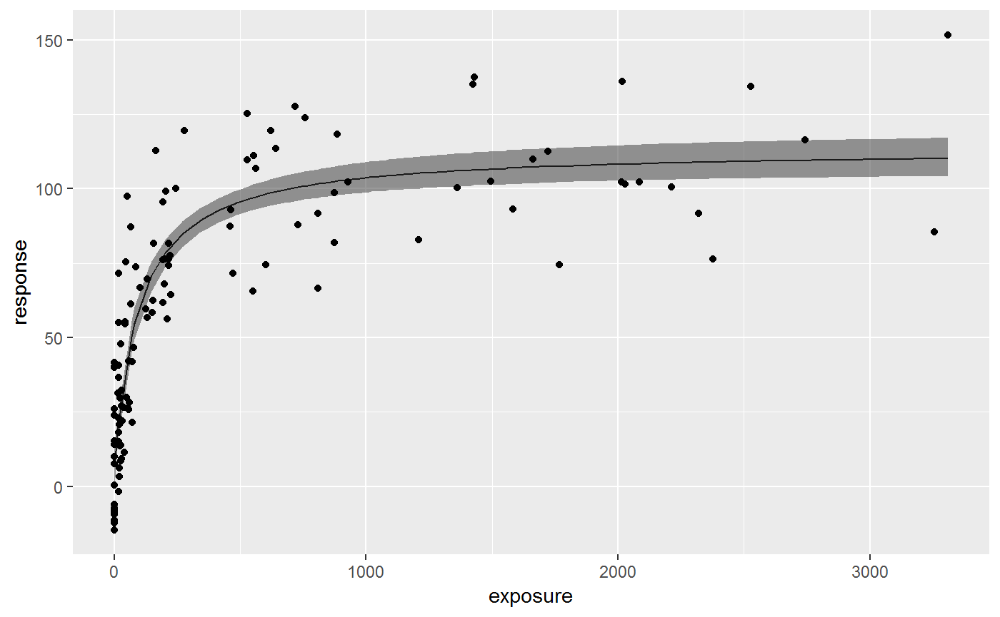
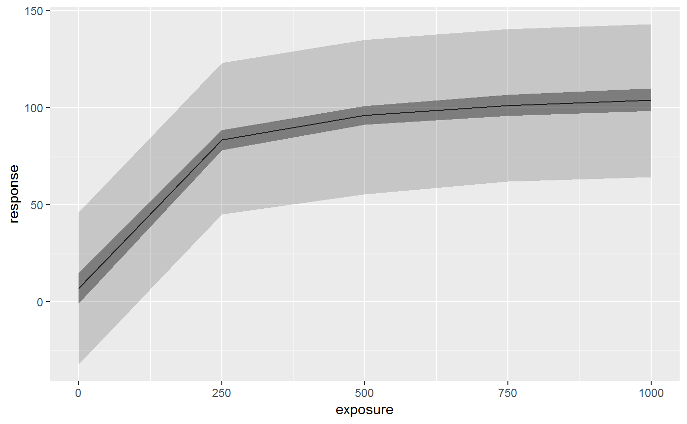
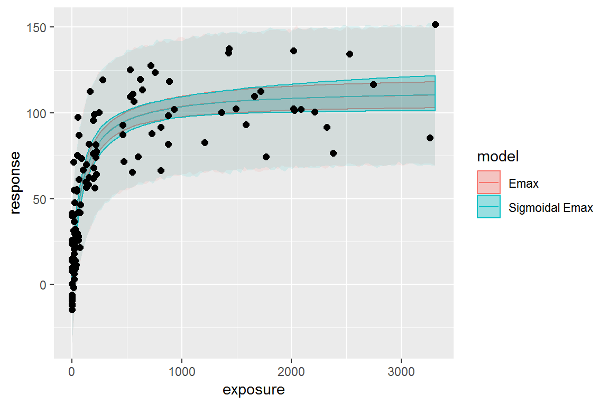

vignettes/emaxmodel.Rmd
emaxmodel.RmdThis vignette provide an overview of the workflow of Emax model analysis using this package.
stan_emax functionstan_emax() is the main function of this package to perform Emax model analysis on the data. This function requires minimum two input arguments - formula and data. In the formula argument, you will specify which columns of data will be used as exposure and response data, in a format similar to stats::lm() function, e.g. response ~ exposure.
data(exposure.response.sample)
fit.emax <- stan_emax(response ~ exposure, data = exposure.response.sample)fit.emax
#> Inference for Stan model: emax.
#> 4 chains, each with iter=2000; warmup=1000; thin=1;
#> post-warmup draws per chain=1000, total post-warmup draws=4000.
#>
#> mean se_mean sd 2.5% 25% 50% 75% 97.5% n_eff Rhat
#> emax 106.69 0.10 5.25 96.13 103.20 106.74 110.19 116.93 2739 1
#> e0 6.81 0.08 4.05 -1.23 4.19 6.80 9.50 14.90 2598 1
#> ec50 100.68 0.38 20.86 66.04 86.39 98.15 112.65 147.98 2988 1
#> gamma 1.00 NaN 0.00 1.00 1.00 1.00 1.00 1.00 NaN NaN
#> sigma 20.05 0.03 1.35 17.62 19.10 19.97 20.92 22.85 2930 1
#>
#> Samples were drawn using NUTS(diag_e) at Tue May 28 23:07:31 2019.
#> For each parameter, n_eff is a crude measure of effective sample size,
#> and Rhat is the potential scale reduction factor on split chains (at
#> convergence, Rhat=1).plot() function shows the estimated Emax model curve with 95% credible intervals of parameters.
plot(fit.emax)
Raw output from rstan is stored in the output variable, and you can access it with $stanfit.
class(fit.emax$stanfit)
#> [1] "stanfit"
#> attr(,"package")
#> [1] "rstan"posterior_predict() function allows users to predict the response using new exposure data. If newdata is not provided, the function returns the prediction on the exposures in original data. The default output is a matrix of posterior predictions, but you can also specify “dataframe” or “tibble” that contain posterior predictions in a long format. See help of rstanemax::posterior_predict() for the description of two predictions, respHat and response.
response.pred <- posterior_predict(fit.emax, newdata = c(0, 100, 1000), returnType = "tibble")
response.pred %>% select(mcmcid, exposure, respHat, response)
#> # A tibble: 12,000 x 4
#> mcmcid exposure respHat response
#> <int> <dbl> <dbl> <dbl>
#> 1 1 0 9.34 12.9
#> 2 1 100 63.3 72.8
#> 3 1 1000 103. 76.2
#> 4 2 0 6.94 -8.14
#> 5 2 100 59.2 56.3
#> 6 2 1000 105. 64.1
#> 7 3 0 6.83 0.523
#> 8 3 100 59.7 81.7
#> 9 3 1000 108. 130.
#> 10 4 0 4.16 3.16
#> # ... with 11,990 more rowsYou can also get quantiles of predictions with posterior_predict_quantile() function.
resp.pred.quantile <- posterior_predict_quantile(fit.emax, newdata = seq(0, 1000, by = 250))
resp.pred.quantile
#> # A tibble: 5 x 7
#> exposure ci_low ci_med ci_high pi_low pi_med pi_high
#> <dbl> <dbl> <dbl> <dbl> <dbl> <dbl> <dbl>
#> 1 0 0.162 6.80 13.4 -27.3 6.09 40.1
#> 2 250 78.7 83.1 87.5 50.5 83.7 116.
#> 3 500 91.6 95.6 99.9 62.2 95.6 130.
#> 4 750 96.3 101. 106. 66.3 101. 135.
#> 5 1000 98.9 104. 109. 69.8 103. 136.This is particularly useful when you want to plot the estimated Emax curve.
ggplot(resp.pred.quantile, aes(exposure, ci_med)) +
geom_line() +
geom_ribbon(aes(ymin=ci_low, ymax=ci_high), alpha = .5) +
geom_ribbon(aes(ymin=pi_low, ymax=pi_high), alpha = .2) +
labs(y = "response")
You can fix parameter values in Emax model for E0 and/or gamma (Hill coefficient). See help of stan_emax() for the details. The default is to fix gamma at 1 and to estimate E0 from data.
Below is the example of estimating gamma from data.
data(exposure.response.sample)
fit.emax.sigmoidal <- stan_emax(response ~ exposure, data = exposure.response.sample, gamma.fix = NULL)fit.emax.sigmoidal
#> Inference for Stan model: emax.
#> 4 chains, each with iter=2000; warmup=1000; thin=1;
#> post-warmup draws per chain=1000, total post-warmup draws=4000.
#>
#> mean se_mean sd 2.5% 25% 50% 75% 97.5% n_eff Rhat
#> emax 107.57 0.26 10.02 91.41 100.85 106.35 112.87 131.77 1482 1
#> e0 7.02 0.09 4.21 -1.34 4.24 7.04 9.81 15.30 2009 1
#> ec50 105.78 0.82 31.47 67.24 85.92 99.37 116.62 187.78 1464 1
#> gamma 1.02 0.00 0.21 0.64 0.88 1.01 1.15 1.48 1861 1
#> sigma 20.13 0.02 1.30 17.82 19.22 20.05 20.93 22.89 2849 1
#>
#> Samples were drawn using NUTS(diag_e) at Tue May 28 23:07:42 2019.
#> For each parameter, n_eff is a crude measure of effective sample size,
#> and Rhat is the potential scale reduction factor on split chains (at
#> convergence, Rhat=1).You can compare the difference of posterior predictions between two models (in this case they are very close to each other):
exposure_pred <- seq(min(exposure.response.sample$exposure),
max(exposure.response.sample$exposure),
length.out = 100)
pred1 <-
posterior_predict_quantile(fit.emax, exposure_pred) %>%
mutate(model = "Emax")
pred2 <-
posterior_predict_quantile(fit.emax.sigmoidal, exposure_pred) %>%
mutate(model = "Sigmoidal Emax")
pred <- bind_rows(pred1, pred2)
ggplot(pred, aes(exposure, ci_med, color = model, fill = model)) +
geom_line() +
geom_ribbon(aes(ymin=ci_low, ymax=ci_high), alpha = .3) +
geom_ribbon(aes(ymin=pi_low, ymax=pi_high), alpha = .1, color = NA) +
geom_point(data=exposure.response.sample, aes(exposure, response),
color = "black", fill = NA, size=2) +
labs(y = "response")